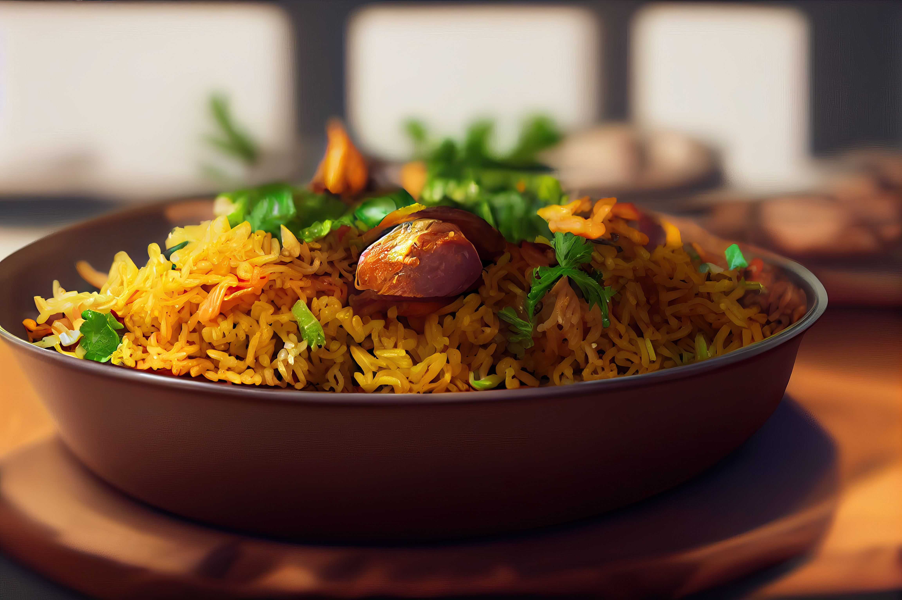

HOME
Pulao Recipe

About Pulao
Pulao is one pot rice dish made by cooking fragrant basmati rice with whole aromatic spices,herbs and sometimes stock. There are many kinds of pulao made in India such as Matar pulao,Tawa pulao and Chicken pulao.
This veg pulao is the most basic dish and is made often times in many Indian homes.you will also find it always on Parties, Buffets and Celebration menus.
Since this is the simplest of the Indian rice dishes made with very little preparation, It is super quick and ridiculously easy to make even for a party when you have a crowd.
A perfectly cooked vegetable pulao should have fluffy,separate rice grains that are not stick and mushy yet fully cooked.The dish must have unique aroma of mint and whole spices like cinnamon,cardamoms and cloves
My recipe will lead you to the same experience of a culture.
Ingredients and it's substitutes:
- Spices: Always use good quality whole spices as they are the key to make aromatic veg pulao. You can also crush the spices lightly and use to release the aroma. There is no substitute to bay leaf, cloves, cinanamom, cardamoms and star anise. While you may skip the rest your pulao won't really have those aromatic flavours.
- Ginger Garlic Paste: can be substituted with grated ginger and garllic but not with chopped or with ground dried ginger and garlic. You won't get the same flavours.
- Herbs: Do not skip fresh mint or pudina leavesas it the next key ingredient that infuses aromato the veg pulao. If you want, You may add a mix of coriander leaves(Cilantro) and mint. If fresh is not available may use a teaspoon of mint paste.
- Rice: Normally aged basmati rice is used to make veg pulao. But if you do not have, just use any other kind of rice that is non sticky. You will need to adjust water as needed depending on the rice.
- Mixed Vegetables: I normally use caarrots, green beans, potatoes, sweet corn, baby corn and peas depending on the availability. Opt for frozen veggies to save time. Frozen veggies don't require sauteing so you may pour water immediately after adding them to the pot.
How to make veg pulao (stepwise):
Preparation for pulao:
You need to prepare the Ingredients first. Rinse 1 and half cups of basmati rice a few times until the water runs clear. Then soak it aside foor atleast 15 to 20 minutes. Meanwhile, prepare the veggies.
- 1 medium onion thinly sliced and 1 green chilli slit
- 1 medium carrot (chopped)
- half cup green peas
- 4 French beans (chopped)
- Handful of mint leaves
- 1 and half teaspoon ginger garlic paste
if you want you can also make the fine paste of ginger, garlic, green chillies and mint leaves.
- Tempering: On a medium flame gently heat 2 tablespoons oil or ghee in a cooker or pot. To make in instant pot, use saute mode. When the oil is slightly hot, add the following whole spices-
- 1 bay leaf
- 2 inch cinanamom
- 4 cloves
- 4 green cardamoms
- 1/2 to 3/4 teaspoon shahi jeera or jeera
- 1 star anise (optional but recommended)
- 1 pinch nutmeg
- little stone flower (optional)
- 1 small strand mace
- When the spices begin to sizzle, add one thinly sliced onion and 1 to 2 slit green chillies.
- When the onion turn Golden, add 1 1/2 teaspoon ginger garlic paste.
- Saute well for 30-40 seconds, until the raw smell of ginger garlic disappears. Do not burn.
- Add mixed veggies and chopped mint/pudin. I use peas, beans, carrots most of the times. You can also use potatoes and a handful of split cashews or softened soya chunks if you like.
- Next saute everything well until the mint smells good. Usually it takes about 2-3 minutes.
- pour 2 1/2 cups water if making in stovetop cooker or 1 3/4 cups for instant pot and then add 1/2 teaspoon salt as well.
- Bring the water to a rolling boil add soaked and drained rice, else the veg pulaowill turn mushy
- Stir gently and taste test the water. If needed add more salt.
- Gently mix everything with the spatula or fluff up the rice with a fork.
Serve Veg Pulao hot or warm with Raita.